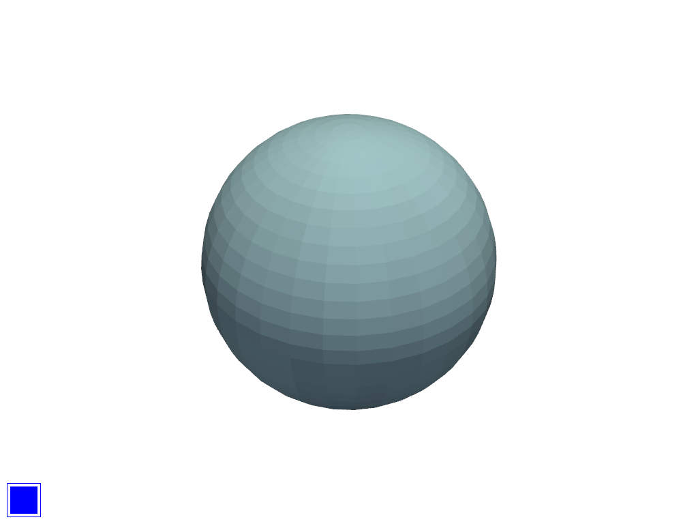

Note
Go to the end to download the full example code. or to run this example in your browser via Binder
Checkbox Widget#
Use a checkbox to turn on/off the visibility of meshes in a scene.
See pyvista.Plotter.add_checkbox_button_widget() for more details.
import pyvista as pv
Single Checkbox#
mesh = pv.Sphere()
p = pv.Plotter()
actor = p.add_mesh(mesh)
def toggle_vis(flag) -> None:
actor.SetVisibility(flag)
p.add_checkbox_button_widget(toggle_vis, value=True)
p.show()

And here is a screen capture of a user interacting with this

Multiple Checkboxes#
In this example, we will add many meshes to a scene with unique colors and create corresponding checkboxes for those meshes of the same color to toggle their visibility in the scene.
colors = [
["ff0000", "28e5da", "0000ff"],
["ffff00", "c8bebe", "f79292"],
["fffff0", "f18c1d", "23dcaa"],
["d785ec", "9d5b13", "e4e0b1"],
["894509", "af45f5", "fff000"],
]
class SetVisibilityCallback:
"""Helper callback to keep a reference to the actor being modified."""
def __init__(self, actor) -> None:
self.actor = actor
def __call__(self, state):
self.actor.SetVisibility(state)
# Widget size
size = 50
p = pv.Plotter()
Startpos = 12
for i, lst in enumerate(colors):
for j, color in enumerate(lst):
actor = p.add_mesh(pv.Sphere(center=(i, j, 0)), color=color)
# Make a separate callback for each widget
callback = SetVisibilityCallback(actor)
p.add_checkbox_button_widget(
callback,
value=True,
position=(5.0, Startpos),
size=size,
border_size=1,
color_on=color,
color_off="grey",
background_color="grey",
)
Startpos = Startpos + size + (size // 10)
p.show()
And here is a screen capture of a user interacting with this

Total running time of the script: (0 minutes 0.731 seconds)